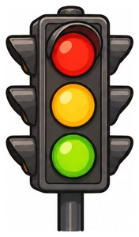
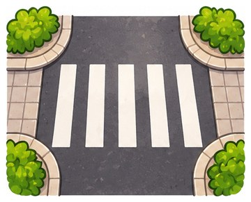
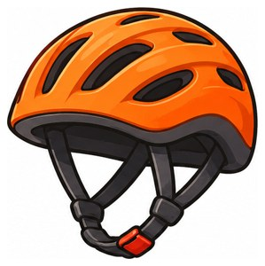
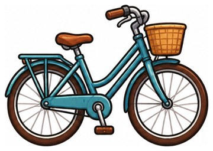
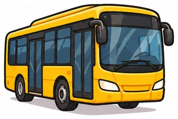
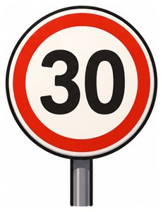
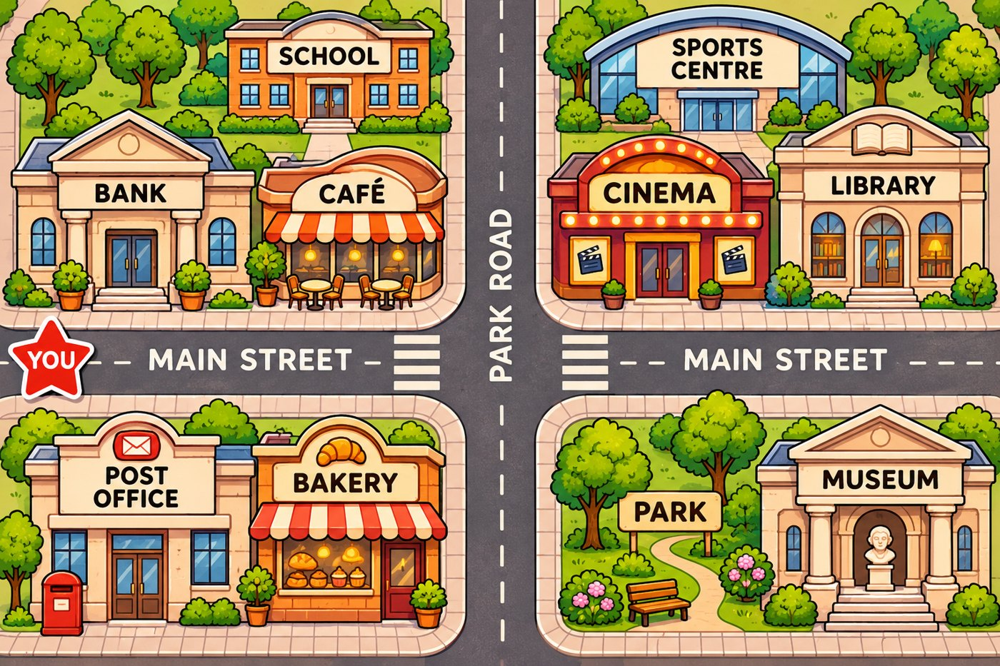

Warm-up: What is it?
4 minВпиши слово под картинкой. Слово из банка можно зачеркнуть, когда использовал. Без очков.






1. Can or can't?
5 × 3 = 156 minПосмотри на знак и впиши can или can't.
2. Guess the words
6 × 3 = 186 minВпиши буквы прямо в чёрточки. Сколько чёрточек, столько букв.
3. Fill in: in, on, by, of
6 × 2 = 126 minСлова можно использовать несколько раз.
4. Complete with these words
5 × 3 = 156 minКаждое слово — один раз. Нажми на слово в банке, чтобы зачеркнуть.
5. Write the opposites
5 × 2 = 105 minНапиши противоположное.
6. Put the words in the correct order
5 × 2 = 107 minНапиши предложение сам. Слова, которые уже использовал, можно зачеркнуть.
7. Put the sentences in order
5 × 4 = 206 minНажимай на реплики по порядку (или впиши номер). В рамке «Your dialogue» диалог будет собираться. Повторное нажатие убирает номер.
Bonus: Look at the map
7 minТы стоишь у звезды. Очки за этот слайд не идут в общий счёт.

Нажми на карту, чтобы увеличить.
Let's talk
5–8 minРезервные вопросы, если осталось время. Отвечай полными предложениями.
Game zone: Road Rush
2–3 min eachВыбери игру. У тебя три сигнала светофора: за каждую ошибку гаснет один. Без очков в общий счёт.
My score
Сделай задания 1–7 и нажми Check в каждом.